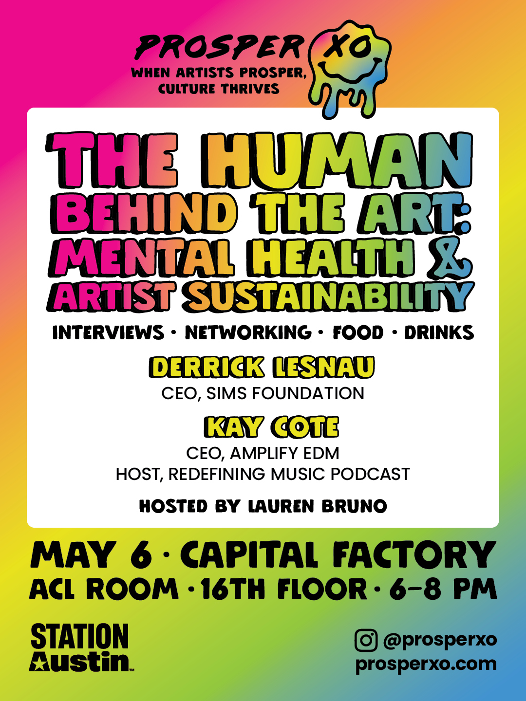

Rock, Culture & Community: The Creative Journey of Luis Zapata
September 9th 2026 | 6:00pm - 8:30pm | TBA
What can music teach us about culture, identity, and the communities we build together?
Join Prosper XO for an evening with Luis Zapata, founder of Rock Lectures, Executive Director of the Pecan Street Festival, longtime event and music industry professional, metal enthusiast, cultural historian, and dedicated advocate for artists and creative communities.
Luis has spent decades immersed in music, events, festivals, touring, and the scenes that form around them. Throughout his career, he has worked alongside artists, labels, tours, venues, festivals, and music communities, helping create opportunities for artists and contributing to the cultural fabric of Austin and beyond.
His advocacy history also includes involvement with the Latino Rock Alliance, an Austin initiative that worked to champion Latino rock and alternative music and create greater visibility and opportunities for artists within the city's music ecosystem. Through showcases and events, including Rock en Español programming surrounding SXSW, the initiative helped bring artists, audiences, and the industry together at a time when these sounds and communities were often underrepresented in the broader music landscape.
Today, as Executive Director of the Pecan Street Festival, one of Austin's longest-running arts festivals, Luis continues that commitment to community; helping create space for independent artists, musicians, makers, local businesses, and the people who make Austin's culture what it is.
But Luis's work isn't only about creating stages for artists. It's also about preserving and telling the stories behind the music.
Through Rock Lectures, Luis explores the history, culture, and communities behind rock and metal, with particular attention to the often-overlooked contributions of Latino and Native American artists and communities and the significant role they have played in shaping these genres and their histories.
For Luis, understanding music isn't just about understanding the artists onstage. It's about understanding the people, places, identities, movements, and communities that made the music possible.
This Town Hall will explore Luis's journey through the music and events industry, the scenes and communities he has helped build and support, and the lessons he's learned from decades of working alongside artists.
We'll also explore the story behind Rock Lectures, Latino and Native American influence in rock and metal, his work advocating for Latino artists, the importance of preserving cultural history, what it takes to sustain festivals and creative spaces, and why uplifting artists and local scenes remains so important to the future of cities like Austin.
Whether you're an artist, event producer, educator, entrepreneur, student, music lover, or simply someone interested in culture and community, this conversation offers a rare opportunity to learn from someone who has spent decades participating in, studying, supporting, and helping shape music culture from the inside.
At Prosper XO, we believe artists are essential cultural partners. Through our monthly Town Hall series, we bring together artists, educators, entrepreneurs, and community leaders to share their experiences and explore the ideas shaping the future of creativity, culture, and artist prosperity.
Join us for an evening celebrating music, history, and the communities that keep culture alive.
Featuring:
Luis Zapata
Founder, Rock Lectures | Executive Director, Pecan Street Festival | Metal Guitarist | Cultural Historian
Hosted by Lauren Bruno
Join us for an evening of honest conversation, community connection, and insight from leaders actively shaping Austin’s music landscape.
This event is free and open to the public.
Because when artists prosper, culture thrives.
Parking: Park in the Omni Hotel garage below Capital Factory and pick up a voucher at the event for a reduced $8 fee.
Thank you to Station Austin for sponsoring Prosper XO and Sage & Hollow for supporting this gathering and helping create space for meaningful cultural dialogue.
Check out our calendar for more upcoming events!
VIBE WITH USPast Town Halls


